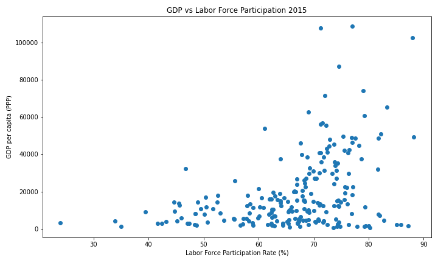
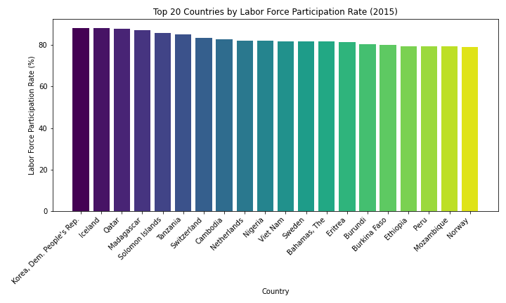

For this project, we have chosen to utilize two datasets, those being the GDP per capita dataset (main dataset) and the labor force participation rate dataset (contextual dataset). Both of these datasets were obtained from the world bank dataset webpage as linked in the given dataset page for this assignment. The main dataset contains information regarding the GDP per Capita for most major countries from 1990 onwards, and the contextual dataset contains information regarding the labor force participation rate for many of the same countries from 1990 onwards as well.
During the initial part of this project, we had chosen the GDP per capita dataset to work on, as we thought it would be interesting to explore relationships between high GDP countries and see their growth from 1990 onwards, to see if there was a difference in growth over this period for different high GDP nations. This is broadly explored in our first interactive plot. When picking our contextual dataset, we decided to pick the labor participation rate as we wanted to see the ralationship between GDP per Capita and labor force participation rates, to see whether richer countries were more efficient (more money per working individual) or whether they were just benefitting from a larger working percentage of their population. These relationships are broadly explored by our two supporting contextual visualizations, which were created from scratch by us using the dataset information available.
This interactive visualization is, similar to the visualization on the previous part of the final project, split up into two separate plots, those being the driver plot and the driven plot.
The driver plot is a bar graph which shows the GDP per capita of the 20 countries in the dataset with the highest GDP per capita for the year 2015. Since this data is not continuous and rather is categorical in nature, we have decided to use a bar plot to depict it. As for color, we have decided to use the steel blue color for all bars, and we have decided to change all other bars except the selected bar to light gray once a bar is selected. This colormap allows the user to easily decipher when no country is selected, and when a country gets selected. There was no need to apply different colors to the bars when unselected because the x-axis adequately shows the user which country corresponds to which bar. Additionally, when hovering over the bar, the country name and the GDP per capita for the 2015 year is visible to the user for ease of use.
The driven plot is a line graph which shows the GDP per capita between the years 1990 and 2024 for all countries if no country is selected on the driver plot, or a particular country corresponding to the driver plot selection. Since this data is continous, as this is for GDP per capita over time, we felt that the use of a line graph would be most appropriate, as interpolation of the data is appropriate here and the continous nature of the data fits a line graph. Furthermore, when unselected, we decided to use different colors to represent the different countries, as can be seen in the plot when no country is selected for the corresponding driver plot. We decided not to include a legend for these colors, as the user can hover over these lines to get information about the country corresponding to that particular line as well as the GDP per Capita for that year mark. Due to this functionality, we felt that a legend would unnecessarily clutter up the visualization, without much additional benefit to the plots. Therefore, we felt that having each country represented by a different color was a sufficient distinction of different countries in this graph. Additionally, when a country is selected in the driver plot, the color of the line for the selected country changes to steel blue, since only one country's data is displayed when a selection is made on the driver plot, removing the need for a color map.
When looking at the data, one common trend we notice is that economies with many industries and many sectors fueling the economy, such as that of the United States, North America as a continent, and the Netherlands, have had much more stable and controlled growth in GDP per capita as compared to countries such as Qatar or the UAE. The reason for this is because, unlike the countries previously mentioned, countries like Qatar and the UAE usually rely on a single source for most of their GDP, oil in the case of these two countries. Therefore, when this resource goes down in demand, such as what happened during the oil crash of the 90's as well as the 2014 oil crash, the GDP per capita of these economies fall dramatically. On the other end, when resources such as oil have their demand outpace their supply, such as what happened during the early 2010's and up to the pandemic with oil, then we see a massive spike in GDP per capita for oil dependent nations such as Qatar and the UAE. This leads to more erratic and volatile GDP per capita graphs for these countries compared with countries such as the US or Netherlands.

This graph shows GDP per Capita (PPP) vs. Labor Force Participation Rate for all countries in the dataset in the year 2015. The scatter plot shows that there is generally a positive relationship between labor force participation rate and GDP per Capita (PPP). This scatter plot also serves well as a snapshot of how the world is doing. In general, countries with a high labor force participation rate but low GDP per Capita mean that those countries have inefficient economies. Overall, the more points on the scatter plot above the poly-fit line, the better the state of the global economy is in general. This is because being above this line means that an economy is punching above its weight in terms of GDP per Capita for its rate of labor force participation.
If a country has lower than average GDP per Capita (below the poly-fit line), we can distinguish it into two groups. The first group is if the country has a lower than 65% labor force participation rate. If so, then the country needs to work on increasing its labor force participation rate, as its economy can grow from employing more people and using the labor resources at its disposal. These countries are normally the ones most affected by war, extreme poverty, and crime, as these are structural problems that stop major parts of the population from being able to work. The next group of countries is those with a labor force participation rate greater than 65%. This means that the country is on its way to improvement, as most of its population has been able to participate in the workforce and does not need to practice subsistence farming. These countries have started their transition toward becoming high-income, export-oriented economies but are currently only producing cheap, low-profit materials. Once these countries graduate from making cheap, low-profit products to expensive, high-profit items (such as China moving from producing clothing to technology and cars), the GDP per Capita of these countries can rise dramatically.
If a country has higher than average GDP per Capita (above the poly-fit line), we can also distinguish it into two groups. The first group is if the country has a lower than 65% labor force participation rate. If so, then the country has probably become high-income but has a highly dependent aging population (such as Europe or Japan). This means that the country’s economy is very efficient, as it is able to produce vast amounts of wealth despite not having many workers. The next group of countries is those with a labor force participation rate greater than 65%. This means that the country is in its economic prime. With a high labor force participation rate, this suggests that the country has a low number of dependents and a high number of workers engaged in high-skilled tasks. This is what leads to very high-income economies such as the United States.
I used a scatterplot as it is a strong choice for comparing two quantative variables for many different countries as I have done. In my case these variables are Labor Force Participation Rate (X-axis) and GDP per Capita (PPP) (Y-axis). A scatterplot also works well as it shows relationships and trends clearly. I furthered this with the use of using a regression line (np.polyfit) to enhance the ability to clearly see relationships and trends. A scatterplot is also a great way to show the data for many countries as compared to bar plots (very skinny bars) the space representing each country (each dot on the plot) is very small allowing us to display data for all countries easily without sacrificing visual clarity.
Through the observation of these different groups and the amount of dots in each group in the scatter plot, we can judge the state of the world economy. Ideally, the more countries that cross into the top right quadrant, the stronger the world economy is overall. In addition to this, the more economies which graduate from the bottom left quadrant, the better. As for colors, I decided to go with default color settings (blue in this case). This is because the x-axis and y-axis already encode for all variables we want to show (labor force and GDP per Capita). Furthermore, even though I could change the color for each country or continent, the purpose of the graph is to give a snapshot of the global economy and macro-economic priciples, not that of specific countries. This is why the default settings of one color was used.

This graph shows the top 20 countries by Labor Force Participation Rate in 2015. This bar plot is very important as it helps contextualize our earlier interactive graph showing the top 20 countries by GDP per Capita (PPP) in 2015. This bar plot serves as a way to take a look at and enforce our top 20 list from before by comparing and contrasting the two lists. Countries which are reprsented on the bar charts for both GDP per Capita and Labor Force Participation are countries which not only have a lot of wealth per individual (GDP per Capita) but that wealth is actual shared among all individuals as most people are actually working (high labour force participation rate).
This shows us that countries like Iceland, Qatar, Switzerland, Netherlands, Sweden and Norway are truly some of the strongest economies on earth as they are present in both of the bar charts we have created. This shows us that these are the most robust economies, something which either graph on its own can't do.
This is because if we just look at the first bar graph showing only countries with highest GDP per Capita (PPP), we see many rich countries such as Saudi Arabia, the United States, Bermuda and the Cayman Islands. The disclusion of these countries in this second bar graph on Labor Force Participation Rate shows us that these economies, despite being very large and efficient, do have problems such as inequality (Saudi Arabia and to a lesser extent the United States) or are inflated due to being tax shelters (Bermuda and the Cayman Islands). The disclusion of these countries from the second bar graph shows that despite these economies being highly developed and properous, their citizens may not be sharing these wealth and prosperity equally. We can contrast these with countries on both bar graphs such as Iceland, Norway, Switzerland, Netherlands where the inclusion on both bar graphs indicates that not only are these economies developed but they also provide all their citizens the opportunity to take part and benefit from the economy.
On the other hand, if we just look at the second bar graph showing only countries with highest Labour Force Participation Rate, we see many countries such as North Korea, Madagascar, Nigeria, Cambodia, Eritrea. The disclusion of these countries in this first bar graph on GDP per Capita (PPP) shows us that these economies, despite using all their human capital resources, are wildly inefficient as despite having all their citizens working, they can't product the same level of goods and services as other economies. This is because many of these economies are centrally planned (such as North Korea) which leads to artifically high number of labor force participation as workers are assigned jobs by the government (however these jobs are inefficient leading to the poor performance of the economy). Furthermore, only taking a look at this bar graph would also show us many countries where large percentages of the population work but in very inefficent industries (such as agriculture) such as Etheopia, Nigeria, Eritreia, Burkina Faso. These economies, despite having large sources of population willing and able to work are not able to capatilize on their vast human capital as it is tied up in inefficient endeavours such as subsistence farming. We can contrast these with countries on both bar graphs such as Iceland, Norway, Switzerland, Netherlands where the inclusion on both bar graphs indicates that not only are these economies drawing from their large human capital resources but they also employ them in efficient industries (high level manufacturing, financial services, technology, specilized services) as opposed to inefficient industries such as subsistence agriculture.
For this graph, I used a bar graph as I am comparing a single numerical value (labor force participation rate) across a small, discrete set of categories (countries). A bar graph also provides a clear way to rank countries, works well for categorical data such as countries, and is easy to interpret exact differnces (difference in bar height). As for colors, I decided to use viridis to help further encode for Labor Force participation. This is becuase for countries very close such as Mozambique and Norway the colors provided by viridis can be used to distinguish differences quickly (lighter the color the lower the labor force participation).